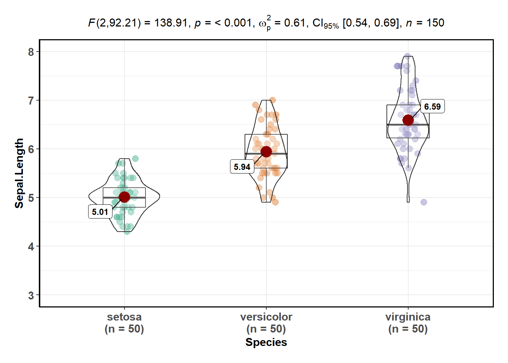
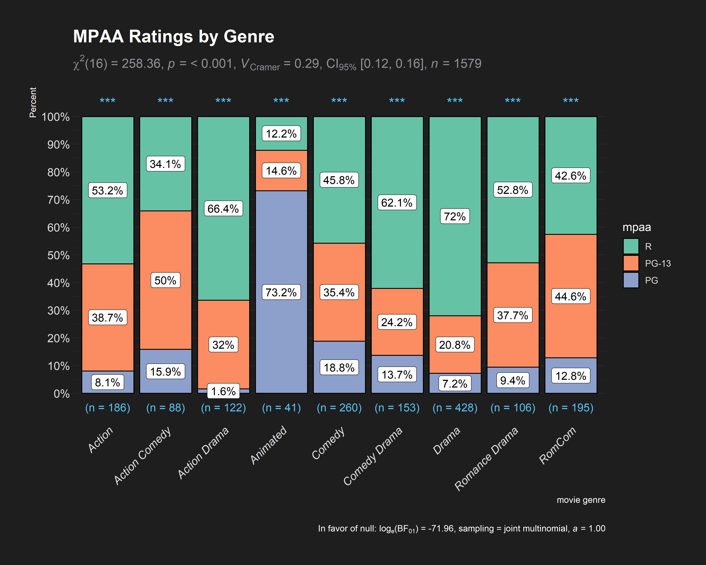
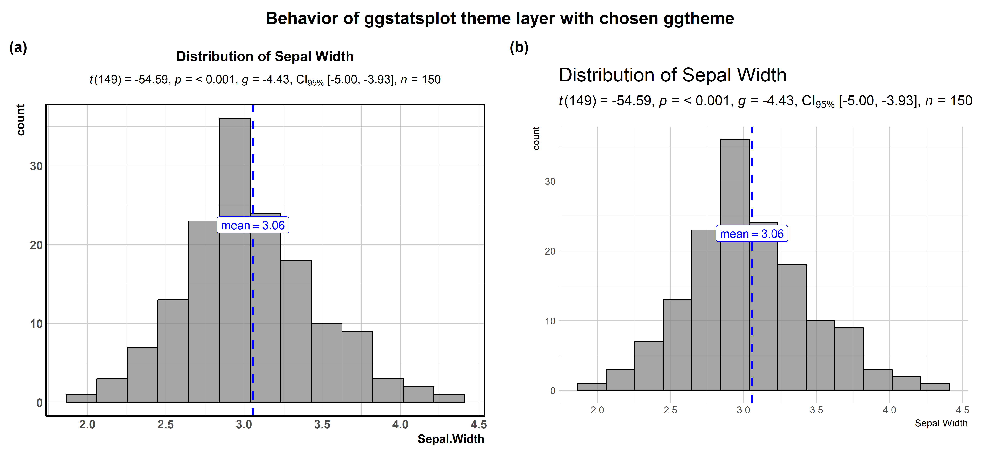

Overview
ggstatsplot is an extension of ggplot2 package for creating graphics with details from statistical tests included in the plots themselves and targeted primarily at behavioral sciences community to provide a one-line code to produce information-rich plots. In a typical exploratory data analysis workflow, data visualization and statistical modeling are two different phases: visualization informs modeling, and modeling in its turn can suggest a different visualization method, and so on and so forth. The central idea of ggstatsplot is simple: combine these two phases into one in the form of graphics with statistical details, which makes data exploration simpler and faster.
Currently, it supports only the most common types of statistical tests: parametric, nonparametric, robust, and bayesian versions of t-test/anova, correlation analyses, contingency table analysis, and regression analyses.
It, therefore, produces a limited kinds of plots for the supported analyses:
- violin plots (for comparisons between groups or conditions),
- pie charts and bar charts (for categorical data),
- scatterplots (for correlations between two variables),
- correlation matrices (for correlations between multiple variables),
- histograms and dot plots/charts (for hypothesis about distributions),
- dot-and-whisker plots (for regression models).
In addition to these basic plots, ggstatsplot also provides grouped_ versions for most functions that makes it easy to repeat the same analysis for any grouping variable.
Future versions will include other types of statistical analyses and plots as well.
Statistical reporting
For all statistical tests reported in the plots, the default template abides by the APA gold standard for statistical reporting. For example, here are results from Yuen’s test for trimmed means (robust t-test):

Summary of types of statistical analyses
The table below summarizes all the different types of analyses currently supported in this package-
| Functions | Description | Parametric | Non-parametric | Robust | Bayes Factor |
|---|---|---|---|---|---|
ggbetweenstats |
Between group/condition comparisons | Yes | Yes | Yes | Yes |
ggwithinstats |
Within group/condition comparisons | Yes | Yes | Yes | Yes |
gghistostats, ggdotplotstats
|
Distribution of a numeric variable | Yes | Yes | Yes | Yes |
ggcorrmat |
Correlation matrix | Yes | Yes | Yes | No |
ggscatterstats |
Correlation between two variables | Yes | Yes | Yes | Yes |
ggpiestats, ggbarstats
|
Association between categorical variables | Yes | NA |
NA |
Yes |
ggpiestats, ggbarstats
|
Equal proportions for categorical variable levels | Yes | NA |
NA |
No |
ggcoefstats |
Regression model coefficients | Yes | No | Yes | No |
Summary of statistical tests and effect sizes
Here is a summary table of all the statistical tests currently supported across various functions:
| Functions | Type | Test | Effect size | 95% CI available? |
|---|---|---|---|---|
ggbetweenstats |
Parametric | Student’s and Welch’s t-test | Cohen’s d, Hedge’s g | \(\checkmark\) |
ggbetweenstats |
Parametric | Fisher’s and Welch’s one-way ANOVA | \[\eta^2, \eta^2_p, \omega^2, \omega^2_p\] | \(\checkmark\) |
ggbetweenstats |
Non-parametric | Mann-Whitney U-test | r | \(\checkmark\) |
ggbetweenstats |
Non-parametric | Kruskal-Wallis Rank Sum Test | \[\epsilon^2\] | \(\checkmark\) |
ggbetweenstats |
Robust | Yuen’s test for trimmed means | \[\xi\] | \(\checkmark\) |
ggbetweenstats |
Robust | Heteroscedastic one-way ANOVA for trimmed means | \[\xi\] | \(\checkmark\) |
ggwithinstats |
Parametric | Student’s t-test | Cohen’s d, Hedge’s g | \(\checkmark\) |
ggwithinstats |
Parametric | Fisher’s one-way repeated measures ANOVA | \[\eta^2_p, \omega^2\] | \(\checkmark\) |
ggwithinstats |
Non-parametric | Wilcoxon signed-rank test | r | \(\checkmark\) |
ggwithinstats |
Non-parametric | Friedman test | \[W_{Kendall}\] | \(\checkmark\) |
ggwithinstats |
Robust | Yuen’s test on trimmed means for dependent samples | \[\xi\] | \(\checkmark\) |
ggwithinstats |
Robust | Heteroscedastic one-way repeated measures ANOVA for trimmed means | \(\times\) | \(\times\) |
ggpiestats |
Parametric | \[\text{Pearson's}~ \chi^2 ~\text{test}\] | Cramér’s V | \(\checkmark\) |
ggpiestats |
Parametric | McNemar’s test | Cohen’s g | \(\checkmark\) |
ggpiestats |
Parametric | One-sample proportion test | Cramér’s V | \(\checkmark\) |
ggscatterstats/ggcorrmat
|
Parametric | Pearson’s r | r | \(\checkmark\) |
ggscatterstats/ggcorrmat
|
Non-parametric | \[\text{Spearman's}~ \rho\] | \[\rho\] | \(\checkmark\) |
ggscatterstats/ggcorrmat
|
Robust | Percentage bend correlation | r | \(\checkmark\) |
gghistostats/ggdotplotstats
|
Parametric | One-sample t-test | Cohen’s d, Hedge’s g | \(\checkmark\) |
gghistostats |
Non-parametric | One-sample Wilcoxon signed rank test | r | \(\checkmark\) |
gghistostats/ggdotplotstats
|
Robust | One-sample percentile bootstrap | robust estimator | \(\checkmark\) |
gghistostats/ggdotplotstats
|
Parametric | Regression models | \[\beta\] | \(\checkmark\) |
Installation
To get the latest, stable CRAN release (0.0.11):
Note: If you are on a linux machine, you will need to have OpenGL libraries installed (specifically, libx11, mesa and Mesa OpenGL Utility library - glu) for the dependency package rgl to work.
You can get the development version of the package from GitHub (0.0.11.9000). To see what new changes (and bug fixes) have been made to the package since the last release on CRAN, you can check the detailed log of changes here: https://indrajeetpatil.github.io/ggstatsplot/news/index.html
If you are in hurry and want to reduce the time of installation, prefer-
# needed package to download from GitHub repo
utils::install.packages(pkgs = "remotes")
# downloading the package from GitHub
remotes::install_github(
repo = "IndrajeetPatil/ggstatsplot", # package path on GitHub
dependencies = FALSE, # assumes you have already installed needed packages
quick = TRUE # skips docs, demos, and vignettes
)If time is not a constraint-
remotes::install_github(
repo = "IndrajeetPatil/ggstatsplot", # package path on GitHub
dependencies = TRUE, # installs packages which ggstatsplot depends on
upgrade_dependencies = TRUE # updates any out of date dependencies
)If you are not using the RStudio IDE and you get an error related to “pandoc” you will either need to remove the argument build_vignettes = TRUE (to avoid building the vignettes) or install pandoc. If you have the rmarkdown R package installed then you can check if you have pandoc by running the following in R:
Citation
If you want to cite this package in a scientific journal or in any other context, run the following code in your R console:
There is currently a publication in preparation corresponding to this package and the citation will be updated once it’s published.
Documentation and Examples
To see the detailed documentation for each function in the stable CRAN version of the package, see:
- README: https://CRAN.R-project.org/package=ggstatsplot/readme/README.html
- Presentation: https://indrajeetpatil.github.io/ggstatsplot_slides/slides/ggstatsplot_presentation.html#1
- Vignettes: https://CRAN.R-project.org/package=ggstatsplot/vignettes/additional.html
To see the documentation relevant for the development version of the package, see the dedicated website for ggstatplot, which is updated after every new commit: https://indrajeetpatil.github.io/ggstatsplot/.
Help
In R, documentation for any function can be accessed with the standard help command (e.g., ?ggbetweenstats).
Another handy tool to see arguments to any of the functions is args. For example-
In case you want to look at the function body for any of the functions, just type the name of the function without the parentheses:
# function to convert class of any object to `ggplot` class
ggstatsplot::ggplot_converter
#> function(plot) {
#> # convert the saved plot
#> p <- cowplot::ggdraw() +
#> cowplot::draw_grob(grid::grobTree(plot))
#>
#> # returning the converted plot
#> return(p)
#> }
#> <bytecode: 0x00000000365fee90>
#> <environment: namespace:ggstatsplot>If you are not familiar either with what the namespace :: does or how to use pipe operator %>%, something this package and its documentation relies a lot on, you can check out these links-
Usage
ggstatsplot relies on non-standard evaluation (NSE), i.e., rather than looking at the values of arguments (x, y), it instead looks at their expressions. This means that you shouldn’t enter arguments with the $ operator and setting data = NULL: data = NULL, x = data$x, y = data$y. You must always specify the data argument for all functions. On the plus side, you can enter arguments either as a string (x = "x", y = "y") or as a bare expression (x = x, y = y) and it wouldn’t matter. To read more about NSE, see- http://adv-r.had.co.nz/Computing-on-the-language.html
ggstatsplot is a very chatty package and will by default print helpful notes on assumptions about linear models, warnings, etc. If you don’t want your console to be cluttered with such messages, they can be turned off by setting argument messages = FALSE in the function call.
Here are examples of the main functions currently supported in ggstatsplot.
Note: If you are reading this on GitHub repository, the documentation below is for the development version of the package. So you may see some features available here that are not currently present in the stable version of this package on CRAN. For documentation relevant for the CRAN version, see:
ggbetweenstats
This function creates either a violin plot, a box plot, or a mix of two for between-group or between-condition comparisons with results from statistical tests in the subtitle. The simplest function call looks like this-
# loading needed libraries
library(ggstatsplot)
# for reproducibility
set.seed(123)
# plot
ggstatsplot::ggbetweenstats(
data = iris,
x = Species,
y = Sepal.Length,
messages = FALSE
) + # further modification outside of ggstatsplot
ggplot2::coord_cartesian(ylim = c(3, 8)) +
ggplot2::scale_y_continuous(breaks = seq(3, 8, by = 1))
Note that this function returns a ggplot2 object and thus any of the graphics layers can be further modified.
The type (of test) argument also accepts the following abbreviations: "p" (for parametric) or "np" (for nonparametric) or "r" (for robust) or "bf" (for Bayes Factor). Additionally, the type of plot to be displayed can also be modified ("box", "violin", or "boxviolin").
A number of other arguments can be specified to make this plot even more informative or change some of the default options.
library(ggplot2)
# for reproducibility
set.seed(123)
# let's leave out one of the factor levels and see if instead of anova, a t-test will be run
iris2 <- dplyr::filter(.data = iris, Species != "setosa")
# let's change the levels of our factors, a common routine in data analysis
# pipeline, to see if this function respects the new factor levels
iris2$Species <-
base::factor(
x = iris2$Species,
levels = c("virginica", "versicolor")
)
# plot
ggstatsplot::ggbetweenstats(
data = iris2,
x = Species,
y = Sepal.Length,
notch = TRUE, # show notched box plot
mean.plotting = TRUE, # whether mean for each group is to be displayed
mean.ci = TRUE, # whether to display confidence interval for means
mean.label.size = 2.5, # size of the label for mean
type = "p", # which type of test is to be run
k = 3, # number of decimal places for statistical results
outlier.tagging = TRUE, # whether outliers need to be tagged
outlier.label = Sepal.Width, # variable to be used for the outlier tag
outlier.label.color = "darkgreen", # changing the color for the text label
xlab = "Type of Species", # label for the x-axis variable
ylab = "Attribute: Sepal Length", # label for the y-axis variable
title = "Dataset: Iris flower data set", # title text for the plot
ggtheme = ggthemes::theme_fivethirtyeight(), # choosing a different theme
ggstatsplot.layer = FALSE, # turn off ggstatsplot theme layer
package = "wesanderson", # package from which color palette is to be taken
palette = "Darjeeling1", # choosing a different color palette
messages = FALSE
)
In case of a parametric t-test, setting bf.message = TRUE will also attach results from Bayesian Student’s t-test. If the null hypothesis can’t be rejected with the NHST approach, the Bayesian approach can help index evidence in favor of the null hypothesis (i.e., BF01).
By default, Bayes Factor quantifies the support for the alternative hypothesis (H1) over the null hypothesis (H0) (i.e., BF10 is displayed). Natural logarithms are shown because BF values can be pretty large. This also makes it easy to compare evidence in favor alternative (BF10) versus null (BF01) hypotheses (since log(BF10) = - log(BF01)).
Additionally, there is also a grouped_ variant of this function that makes it easy to repeat the same operation across a single grouping variable:
# for reproducibility
set.seed(123)
# plot
ggstatsplot::grouped_ggbetweenstats(
data = dplyr::filter(
.data = ggstatsplot::movies_long,
genre %in% c("Action", "Action Comedy", "Action Drama", "Comedy")
),
x = mpaa,
y = length,
grouping.var = genre, # grouping variable
pairwise.comparisons = TRUE, # display significant pairwise comparisons
pairwise.annotation = "p.value", # how do you want to annotate the pairwise comparisons
p.adjust.method = "bonferroni", # method for adjusting p-values for multiple comparisons
conf.level = 0.99, # changing confidence level to 99%
ggplot.component = list( # adding new components to `ggstatsplot` default
ggplot2::scale_y_continuous(sec.axis = ggplot2::dup_axis())
),
k = 3,
title.prefix = "Movie genre",
caption = substitute(paste(
italic("Source"),
":IMDb (Internet Movie Database)"
)),
palette = "default_jama",
package = "ggsci",
messages = FALSE,
nrow = 2,
title.text = "Differences in movie length by mpaa ratings for different genres"
)
Summary of tests
Following (between-subjects) tests are carried out for each type of analyses-
| Type | No. of groups | Test |
|---|---|---|
| Parametric | > 2 | Student’s or Welch’s one-way ANOVA |
| Non-parametric | > 2 | Kruskal–Wallis one-way ANOVA |
| Robust | > 2 | Heteroscedastic one-way ANOVA for trimmed means |
| Bayes Factor | > 2 | Student’s ANOVA |
| Parametric | 2 | Student’s or Welch’s t-test |
| Non-parametric | 2 | Mann–Whitney U test |
| Robust | 2 | Yuen’s test for trimmed means |
| Bayes Factor | 2 | Student’s t-test |
Here is a summary of multiple pairwise comparison tests supported in ggbetweenstats-
| Type | Equal variance? | Test | p-value adjustment? |
|---|---|---|---|
| Parametric | No | Games-Howell test | Yes |
| Parametric | Yes | Student’s t-test | Yes |
| Non-parametric | No | Dwass-Steel-Crichtlow-Fligner test | Yes |
| Robust | No | Yuen’s trimmed means test | Yes |
| Bayes Factor | No | No | No |
| Bayes Factor | Yes | No | No |
For more, see the ggbetweenstats vignette: https://indrajeetpatil.github.io/ggstatsplot/articles/web_only/ggbetweenstats.html
ggwithinstats
ggbetweenstats function has an identical twin function ggwithinstats for repeated measures designs that behaves in the same fashion with few minor tweaks. As can be seen from an example below, the only difference between the plot structure is that now the group means are connected by paths to highlight the within-subjects nature of the data.
# for reproducibility and data
set.seed(123)
library(WRS2)
# plot
ggstatsplot::ggwithinstats(
data = WRS2::WineTasting,
x = Wine,
y = Taste,
sort = "descending", # ordering groups along the x-axis based on
sort.fun = median, # values of `y` variable
pairwise.comparisons = TRUE,
pairwise.display = "s",
pairwise.annotation = "p",
title = "Wine tasting",
caption = "Data from: `WRS2` R package",
ggtheme = ggthemes::theme_fivethirtyeight(),
ggstatsplot.layer = FALSE,
messages = FALSE
)
As with the ggbetweenstats, this function also has a grouped_ variant that makes repeating the same analysis across a single grouping variable quicker. We will see an example with only repeated measurements-
# common setup
set.seed(123)
library(jmv)
data("bugs", package = "jmv")
# getting data in tidy format
data_bugs <- bugs %>%
tibble::as_tibble(x = .) %>%
tidyr::gather(data = ., key, value, LDLF:HDHF) %>%
dplyr::filter(.data = ., Region %in% c("Europe", "North America"))
# plot
ggstatsplot::grouped_ggwithinstats(
data = dplyr::filter(data_bugs, key %in% c("LDLF", "LDHF")),
x = key,
y = value,
xlab = "Condition",
ylab = "Desire to kill an artrhopod",
grouping.var = Region,
outlier.tagging = TRUE,
outlier.label = Education,
ggtheme = hrbrthemes::theme_ipsum_tw(),
ggstatsplot.layer = FALSE,
messages = FALSE
)
Summary of tests
Following (within-subjects) tests are carried out for each type of analyses-
| Type | No. of groups | Test |
|---|---|---|
| Parametric | > 2 | One-way repeated measures ANOVA |
| Non-parametric | > 2 | Friedman test |
| Robust | > 2 | Heteroscedastic one-way repeated measures ANOVA for trimmed means |
| Bayes Factor | > 2 | One-way repeated measures ANOVA |
| Parametric | 2 | Student’s t-test |
| Non-parametric | 2 | Wilcoxon signed-rank test |
| Robust | 2 | Yuen’s test on trimmed means for dependent samples |
| Bayes Factor | 2 | Student’s t-test |
Here is a summary of multiple pairwise comparison tests supported in ggwithinstats-
| Type | Test | p-value adjustment? |
|---|---|---|
| Parametric | Student’s t-test | Yes |
| Non-parametric | Durbin-Conover test | Yes |
| Robust | Yuen’s trimmed means test | Yes |
| Bayes Factor | No | No |
For more, see the ggwithinstats vignette: https://indrajeetpatil.github.io/ggstatsplot/articles/web_only/ggwithinstats.html
ggscatterstats
This function creates a scatterplot with marginal histograms/boxplots/density/violin/densigram plots from ggExtra::ggMarginal and results from statistical tests in the subtitle:
ggstatsplot::ggscatterstats(
data = ggplot2::msleep,
x = sleep_rem,
y = awake,
xlab = "REM sleep (in hours)",
ylab = "Amount of time spent awake (in hours)",
title = "Understanding mammalian sleep",
messages = FALSE
)
Number of other arguments can be specified to modify this basic plot-
# for reproducibility
set.seed(123)
# plot
ggstatsplot::ggscatterstats(
data = dplyr::filter(.data = ggstatsplot::movies_long, genre == "Action"),
x = budget,
y = rating,
type = "robust", # type of test that needs to be run
conf.level = 0.99, # confidence level
xlab = "Movie budget (in million/ US$)", # label for x axis
ylab = "IMDB rating", # label for y axis
label.var = "title", # variable for labeling data points
label.expression = "rating < 5 & budget > 100", # expression that decides which points to label
line.color = "yellow", # changing regression line color line
title = "Movie budget and IMDB rating (action)", # title text for the plot
caption = expression( # caption text for the plot
paste(italic("Note"), ": IMDB stands for Internet Movie DataBase")
),
ggtheme = hrbrthemes::theme_ipsum_ps(), # choosing a different theme
ggstatsplot.layer = FALSE, # turn off ggstatsplot theme layer
marginal.type = "density", # type of marginal distribution to be displayed
xfill = "#0072B2", # color fill for x-axis marginal distribution
yfill = "#009E73", # color fill for y-axis marginal distribution
xalpha = 0.6, # transparency for x-axis marginal distribution
yalpha = 0.6, # transparency for y-axis marginal distribution
centrality.para = "median", # central tendency lines to be displayed
messages = FALSE # turn off messages and notes
)
Additionally, there is also a grouped_ variant of this function that makes it easy to repeat the same operation across a single grouping variable:
# for reproducibility
set.seed(123)
# plot
ggstatsplot::grouped_ggscatterstats(
data = dplyr::filter(
.data = ggstatsplot::movies_long,
genre %in% c("Action", "Action Comedy", "Action Drama", "Comedy")
),
x = rating,
y = length,
conf.level = 0.99,
k = 3, # no. of decimal places in the results
xfill = "#E69F00",
yfill = "#8b3058",
xlab = "IMDB rating",
grouping.var = genre, # grouping variable
title.prefix = "Movie genre",
ggtheme = ggplot2::theme_grey(),
ggplot.component = list(
ggplot2::scale_x_continuous(breaks = seq(2, 9, 1), limits = (c(2, 9)))
),
messages = FALSE,
nrow = 2,
title.text = "Relationship between movie length by IMDB ratings for different genres"
)
Using ggscatterstats() in R Notebooks or R Markdown
If you try including a ggscatterstats() plot inside an R Notebook or R Markdown code chunk, you’ll notice that the plot doesn’t get output. In order to get a ggscatterstats() to show up in these contexts, you need to save the ggscatterstats plot as a variable in one code chunk, and explicitly print it using the grid package in another chunk, like this:
# include the following code in your code chunk inside R Notebook or Markdown
grid::grid.newpage()
grid::grid.draw(
ggstatsplot::ggscatterstats(
data = ggstatsplot::movies_wide,
x = budget,
y = rating,
marginal = TRUE,
messages = FALSE
)
)Summary of tests
Following tests are carried out for each type of analyses. Additionally, the correlation coefficients (and their confidence intervals) are used as effect sizes-
| Type | Test | CI? |
|---|---|---|
| Parametric | Pearson’s correlation coefficient | Yes |
| Non-parametric | Spearman’s rank correlation coefficient | Yes |
| Robust | Percentage bend correlation coefficient | Yes |
| Bayes Factor | Pearson’s correlation coefficient | No |
For more, see the ggscatterstats vignette: https://indrajeetpatil.github.io/ggstatsplot/articles/web_only/ggscatterstats.html
ggpiestats
This function creates a pie chart for categorical or nominal variables with results from contingency table analysis (Pearson’s chi-squared test for between-subjects design and McNemar’s test for within-subjects design) included in the subtitle of the plot. If only one categorical variable is entered, results from one-sample proportion test will be displayed as a subtitle.
# for reproducibility
set.seed(123)
# plot
ggstatsplot::ggpiestats(
data = ggplot2::msleep,
main = vore,
title = "Composition of vore types among mammals",
messages = FALSE
)
This function can also be used to study an interaction between two categorical variables. Additionally, this basic plot can further be modified with additional arguments and the function returns a ggplot2 object that can further be modified with ggplot2 syntax:
# for reproducibility
set.seed(123)
# plot
ggstatsplot::ggpiestats(
data = mtcars,
main = am,
condition = cyl,
conf.level = 0.99, # confidence interval for effect size measure
title = "Dataset: Motor Trend Car Road Tests", # title for the plot
stat.title = "interaction: ", # title for the results
legend.title = "Transmission", # title for the legend
factor.levels = c("1 = manual", "0 = automatic"), # renaming the factor level names (`main`)
facet.wrap.name = "No. of cylinders", # name for the facetting variable
slice.label = "counts", # show counts data instead of percentages
package = "ggsci", # package from which color palette is to be taken
palette = "default_jama", # choosing a different color palette
caption = substitute( # text for the caption
paste(italic("Source"), ": 1974 Motor Trend US magazine")
),
messages = FALSE # turn off messages and notes
)
In case of within-subjects designs, setting paired = TRUE will produce results from McNemar’s test-
# for reproducibility
set.seed(123)
# data
survey.data <- data.frame(
`1st survey` = c("Approve", "Approve", "Disapprove", "Disapprove"),
`2nd survey` = c("Approve", "Disapprove", "Approve", "Disapprove"),
`Counts` = c(794, 150, 86, 570),
check.names = FALSE
)
# plot
ggstatsplot::ggpiestats(
data = survey.data,
main = `1st survey`,
condition = `2nd survey`,
counts = Counts,
paired = TRUE, # within-subjects design
conf.level = 0.99, # confidence interval for effect size measure
stat.title = "McNemar's Test: ",
package = "wesanderson",
palette = "Royal1"
)
#> Note: 99% CI for effect size estimate was computed with 100 bootstrap samples.
#> Note: Results from one-sample proportion tests for each
#> level of the variable 2nd survey testing for equal
#> proportions of the variable 1st survey.
#> # A tibble: 2 x 8
#> condition N Approve Disapprove `Chi-squared` df `p-value`
#> <fct> <chr> <chr> <chr> <dbl> <dbl> <dbl>
#> 1 Approve (n =~ 90.23% 9.77% 570. 1 0
#> 2 Disappro~ (n =~ 20.83% 79.17% 245 1 0
#> # ... with 1 more variable: significance <chr>
Additionally, there is also a grouped_ variant of this function that makes it easy to repeat the same operation across a single grouping variable:
# for reproducibility
set.seed(123)
# plot
ggstatsplot::grouped_ggpiestats(
dplyr::filter(
.data = ggstatsplot::movies_long,
genre %in% c("Action", "Action Comedy", "Action Drama", "Comedy")
),
main = mpaa,
grouping.var = genre, # grouping variable
title.prefix = "Movie genre", # prefix for the facetted title
label.text.size = 3, # text size for slice labels
slice.label = "both", # show both counts and percentage data
perc.k = 1, # no. of decimal places for percentages
palette = "brightPastel",
package = "quickpalette",
messages = FALSE,
nrow = 2,
title.text = "Composition of MPAA ratings for different genres"
)
Summary of tests
Following tests are carried out for each type of analyses-
| Type of data | Design | Test |
|---|---|---|
| Unpaired | n X p contingency table | Pearson’s chi-squared test |
| Paired | n X p contingency table | McNemar’s test |
| Frequency | n X 1 contingency table | Goodness of fit |
Following effect sizes (and confidence intervals/CI) are available for each type of test-
| Type | Effect size | CI? |
|---|---|---|
| Pearson’s chi-squared test | Cramer’s V | Yes |
| McNemar’s test | g | Yes |
| Goodness of fit | V | Yes |
For more, see the ggpiestats vignette: https://indrajeetpatil.github.io/ggstatsplot/articles/web_only/ggpiestats.html
ggbarstats
In case you are not a fan of pie charts (for very good reasons), you can alternatively use ggbarstats function-
# for reproducibility
set.seed(123)
# plot
ggstatsplot::ggbarstats(
data = ggstatsplot::movies_long,
main = mpaa,
condition = genre,
sampling.plan = "jointMulti",
title = "MPAA Ratings by Genre",
xlab = "movie genre",
perc.k = 1,
x.axis.orientation = "slant",
ggtheme = hrbrthemes::theme_modern_rc(),
ggstatsplot.layer = FALSE,
ggplot.component = ggplot2::theme(axis.text.x = ggplot2::element_text(face = "italic")),
palette = "Set2",
messages = FALSE
)
And, needless to say, there is also a grouped_ variant of this function-
# setup
library(ggstatsplot)
set.seed(123)
# let's create a smaller dataframe
diamonds_short <- ggplot2::diamonds %>%
dplyr::filter(.data = ., cut %in% c("Very Good", "Ideal")) %>%
dplyr::filter(.data = ., clarity %in% c("SI1", "SI2", "VS1", "VS2", "VVS1")) %>%
dplyr::sample_frac(tbl = ., size = 0.05)
# plot
ggstatsplot::grouped_ggbarstats(
data = diamonds_short,
main = color,
condition = clarity,
grouping.var = cut,
sampling.plan = "poisson",
title.prefix = "Quality",
data.label = "both",
label.text.size = 3,
perc.k = 1,
package = "palettetown",
palette = "charizard",
ggtheme = ggthemes::theme_tufte(base_size = 12),
ggstatsplot.layer = FALSE,
messages = FALSE,
title.text = "Diamond quality and color combination",
nrow = 2
)
gghistostats
In case you would like to see the distribution of one variable and check if it is significantly different from a specified value with a one sample test, this function will let you do that.
The type (of test) argument also accepts the following abbreviations: "p" (for parametric) or "np" (for nonparametric) or "r" (for robust) or "bf" (for Bayes Factor).
ggstatsplot::gghistostats(
data = ToothGrowth, # dataframe from which variable is to be taken
x = len, # numeric variable whose distribution is of interest
title = "Distribution of Sepal.Length", # title for the plot
fill.gradient = TRUE, # use color gradient
test.value = 10, # the comparison value for t-test
test.value.line = TRUE, # display a vertical line at test value
type = "bf", # bayes factor for one sample t-test
bf.prior = 0.8, # prior width for calculating the bayes factor
messages = FALSE # turn off the messages
)
The aesthetic defaults can be easily modified-
# for reproducibility
set.seed(123)
# plot
ggstatsplot::gghistostats(
data = iris, # dataframe from which variable is to be taken
x = Sepal.Length, # numeric variable whose distribution is of interest
title = "Distribution of Iris sepal length", # title for the plot
caption = substitute(paste(italic("Source:", "Ronald Fisher's Iris data set"))),
type = "parametric", # one sample t-test
conf.level = 0.99, # changing confidence level for effect size
bar.measure = "mix", # what does the bar length denote
test.value = 5, # default value is 0
test.value.line = TRUE, # display a vertical line at test value
test.value.color = "#0072B2", # color for the line for test value
centrality.para = "mean", # which measure of central tendency is to be plotted
centrality.color = "darkred", # decides color for central tendency line
binwidth = 0.10, # binwidth value (experiment)
bf.prior = 0.8, # prior width for computing bayes factor
messages = FALSE, # turn off the messages
ggtheme = hrbrthemes::theme_ipsum_tw(), # choosing a different theme
ggstatsplot.layer = FALSE # turn off ggstatsplot theme layer
)
As can be seen from the plot, bayes factor can be attached (bf.message = TRUE) to assess evidence in favor of the null hypothesis.
Additionally, there is also a grouped_ variant of this function that makes it easy to repeat the same operation across a single grouping variable:
# for reproducibility
set.seed(123)
# plot
ggstatsplot::grouped_gghistostats(
data = dplyr::filter(
.data = ggstatsplot::movies_long,
genre %in% c("Action", "Action Comedy", "Action Drama", "Comedy")
),
x = budget,
xlab = "Movies budget (in million US$)",
type = "robust", # use robust location measure
grouping.var = genre, # grouping variable
normal.curve = TRUE, # superimpose a normal distribution curve
normal.curve.color = "red",
title.prefix = "Movie genre",
ggtheme = ggthemes::theme_tufte(),
ggplot.component = list( # modify the defaults from `ggstatsplot` for each plot
ggplot2::scale_x_continuous(breaks = seq(0, 200, 50), limits = (c(0, 200)))
),
messages = FALSE,
nrow = 2,
title.text = "Movies budgets for different genres"
)
Summary of tests
Following tests are carried out for each type of analyses-
| Type | Test |
|---|---|
| Parametric | One-sample Student’s t-test |
| Non-parametric | One-sample Wilcoxon test |
| Robust | One-sample percentile bootstrap |
| Bayes Factor | One-sample Student’s t-test |
For more, including information about the variant of this function grouped_gghistostats, see the gghistostats vignette: https://indrajeetpatil.github.io/ggstatsplot/articles/web_only/gghistostats.html
ggdotplotstats
This function is similar to gghistostats, but is intended to be used when numeric variable also has a label.
# for reproducibility
set.seed(123)
# plot
ggdotplotstats(
data = dplyr::filter(.data = gapminder::gapminder, continent == "Asia"),
y = country,
x = lifeExp,
test.value = 55,
test.value.line = TRUE,
test.line.labeller = TRUE,
test.value.color = "red",
centrality.para = "median",
centrality.k = 0,
title = "Distribution of life expectancy in Asian continent",
xlab = "Life expectancy",
messages = FALSE,
caption = substitute(
paste(
italic("Source"),
": Gapminder dataset from https://www.gapminder.org/"
)
)
)
As with the rest of the functions in this package, there is also a grouped_ variant of this function to facilitateto repeat the same operation across a grouping variable.
# for reproducibility
set.seed(123)
# removing factor level with very few no. of observations
df <- dplyr::filter(.data = ggplot2::mpg, cyl %in% c("4", "6"))
# plot
ggstatsplot::grouped_ggdotplotstats(
data = df,
x = cty,
y = manufacturer,
xlab = "city miles per gallon",
ylab = "car manufacturer",
type = "np", # non-parametric test
grouping.var = cyl, # grouping variable
test.value = 15.5,
title.prefix = "cylinder count",
point.color = "red",
point.size = 5,
point.shape = 13,
test.value.line = TRUE,
ggtheme = ggthemes::theme_par(),
messages = FALSE,
title.text = "Fuel economy data"
)
ggcorrmat
ggcorrmat makes a correlalogram (a matrix of correlation coefficients) with minimal amount of code. Just sticking to the defaults itself produces publication-ready correlation matrices. But, for the sake of exploring the available options, let’s change some of the defaults. For example, multiple aesthetics-related arguments can be modified to change the appearance of the correlation matrix.
# for reproducibility
set.seed(123)
# as a default this function outputs a correlalogram plot
ggstatsplot::ggcorrmat(
data = ggplot2::msleep,
corr.method = "robust", # correlation method
sig.level = 0.001, # threshold of significance
p.adjust.method = "holm", # p-value adjustment method for multiple comparisons
cor.vars = c(sleep_rem, awake:bodywt), # a range of variables can be selected
cor.vars.names = c(
"REM sleep", # variable names
"time awake",
"brain weight",
"body weight"
),
matrix.type = "upper", # type of visualization matrix
colors = c("#B2182B", "white", "#4D4D4D"),
title = "Correlalogram for mammals sleep dataset",
subtitle = "sleep units: hours; weight units: kilograms"
)
Note that if there are NAs present in the selected dataframe, the legend will display minimum, median, and maximum number of pairs used for correlation matrices.
Alternatively, you can use it just to get the correlation matrices and their corresponding p-values (in a tibble format). Also, note that if cor.vars are not specified, all numeric variables will be used.
# for reproducibility
set.seed(123)
# show four digits in a tibble
options(pillar.sigfig = 4)
# getting the correlation coefficient matrix
ggstatsplot::ggcorrmat(
data = iris, # all numeric variables from data will be used
corr.method = "robust",
output = "correlations", # specifying the needed output ("r" or "corr" will also work)
digits = 3 # number of digits to be dispayed for correlation coefficient
)
#> # A tibble: 4 x 5
#> variable Sepal.Length Sepal.Width Petal.Length Petal.Width
#> <chr> <dbl> <dbl> <dbl> <dbl>
#> 1 Sepal.Length 1 -0.143 0.878 0.837
#> 2 Sepal.Width -0.143 1 -0.426 -0.373
#> 3 Petal.Length 0.878 -0.426 1 0.966
#> 4 Petal.Width 0.837 -0.373 0.966 1
# getting the p-value matrix
ggstatsplot::ggcorrmat(
data = ggplot2::msleep,
cor.vars = sleep_total:bodywt,
corr.method = "robust",
output = "p.values", # only "p" or "p-values" will also work
p.adjust.method = "holm"
)
#> # A tibble: 6 x 7
#> variable sleep_total sleep_rem sleep_cycle awake brainwt bodywt
#> <chr> <dbl> <dbl> <dbl> <dbl> <dbl> <dbl>
#> 1 sleep_to~ 0. 5.291e-12 9.138e- 3 0. 3.170e- 5 2.568e- 6
#> 2 sleep_rem 4.070e-13 0. 1.978e- 2 5.291e-12 9.698e- 3 3.762e- 3
#> 3 sleep_cy~ 2.285e- 3 1.978e- 2 0. 9.138e- 3 1.637e- 9 1.696e- 5
#> 4 awake 0. 4.070e-13 2.285e- 3 0. 3.170e- 5 2.568e- 6
#> 5 brainwt 4.528e- 6 4.849e- 3 1.488e-10 4.528e- 6 0. 4.509e-17
#> 6 bodywt 2.568e- 7 7.524e- 4 2.120e- 6 2.568e- 7 3.221e-18 0.
# getting the confidence intervals for correlations
ggstatsplot::ggcorrmat(
data = ggplot2::msleep,
cor.vars = sleep_total:bodywt,
corr.method = "kendall",
output = "ci",
p.adjust.method = "holm"
)
#> Note: In the correlation matrix,
#> the upper triangle: p-values adjusted for multiple comparisons
#> the lower triangle: unadjusted p-values.
#> # A tibble: 15 x 7
#> pair r lower upper p lower.adj upper.adj
#> <chr> <dbl> <dbl> <dbl> <dbl> <dbl> <dbl>
#> 1 sleep_total-s~ 0.5922 4.000e-1 7.345e-1 4.981e- 7 0.3027 0.7817
#> 2 sleep_total-s~ -0.3481 -6.214e-1 6.818e-4 5.090e- 2 -0.6789 0.1002
#> 3 sleep_total-a~ -1 -1.000e+0 -1.000e+0 0. -1 -1
#> 4 sleep_total-b~ -0.4293 -6.220e-1 -1.875e-1 9.621e- 4 -0.6858 -0.07796
#> 5 sleep_total-b~ -0.3851 -5.547e-1 -1.847e-1 3.247e- 4 -0.6050 -0.1106
#> 6 sleep_rem-sle~ -0.2066 -5.180e-1 1.531e-1 2.566e- 1 -0.5180 0.1531
#> 7 sleep_rem-awa~ -0.5922 -7.345e-1 -4.000e-1 4.981e- 7 -0.7832 -0.2990
#> 8 sleep_rem-bra~ -0.2636 -5.096e-1 2.217e-2 7.022e- 2 -0.5400 0.06404
#> 9 sleep_rem-bod~ -0.3163 -5.262e-1 -7.004e-2 1.302e- 2 -0.5662 -0.01317
#> 10 sleep_cycle-a~ 0.3481 -6.818e-4 6.214e-1 5.090e- 2 -0.1145 0.6867
#> 11 sleep_cycle-b~ 0.7125 4.739e-1 8.536e-1 1.001e- 5 0.3239 0.8954
#> 12 sleep_cycle-b~ 0.6545 3.962e-1 8.168e-1 4.834e- 5 0.2459 0.8656
#> 13 awake-brainwt 0.4293 1.875e-1 6.220e-1 9.621e- 4 0.08322 0.6829
#> 14 awake-bodywt 0.3851 1.847e-1 5.547e-1 3.247e- 4 0.1049 0.6087
#> 15 brainwt-bodywt 0.8378 7.373e-1 9.020e-1 8.181e-16 0.6716 0.9238
# getting the sample sizes for all pairs
ggstatsplot::ggcorrmat(
data = ggplot2::msleep,
cor.vars = sleep_total:bodywt,
corr.method = "robust",
output = "n" # note that n is different due to NAs
)
#> # A tibble: 6 x 7
#> variable sleep_total sleep_rem sleep_cycle awake brainwt bodywt
#> <chr> <dbl> <dbl> <dbl> <dbl> <dbl> <dbl>
#> 1 sleep_total 83 61 32 83 56 83
#> 2 sleep_rem 61 61 32 61 48 61
#> 3 sleep_cycle 32 32 32 32 30 32
#> 4 awake 83 61 32 83 56 83
#> 5 brainwt 56 48 30 56 56 56
#> 6 bodywt 83 61 32 83 56 83Additionally, there is also a grouped_ variant of this function that makes it easy to repeat the same operation across a single grouping variable:
# for reproducibility
set.seed(123)
# plot
# let's use only 50% of the data to speed up the process
ggstatsplot::grouped_ggcorrmat(
data = dplyr::filter(
.data = ggstatsplot::movies_long,
genre %in% c("Action", "Action Comedy", "Action Drama", "Comedy")
),
cor.vars = length:votes,
corr.method = "np",
colors = c("#cbac43", "white", "#550000"),
grouping.var = genre, # grouping variable
digits = 3, # number of digits after decimal point
title.prefix = "Movie genre",
messages = FALSE,
nrow = 2
)
Summary of tests
Following tests are carried out for each type of analyses. Additionally, the correlation coefficients (and their confidence intervals) are used as effect sizes-
| Type | Test | CI? |
|---|---|---|
| Parametric | Pearson’s correlation coefficient | Yes |
| Non-parametric | Spearman’s rank correlation coefficient | Yes |
| Robust | Percentage bend correlation coefficient | No |
| Bayes Factor | Pearson’s correlation coefficient | No |
For examples and more information, see the ggcorrmat vignette: https://indrajeetpatil.github.io/ggstatsplot/articles/web_only/ggcorrmat.html
ggcoefstats
ggcoefstats creates a lot with the regression coefficients’ point estimates as dots with confidence interval whiskers.
# for reproducibility
set.seed(123)
# model
mod <- stats::lm(
formula = mpg ~ am * cyl,
data = mtcars
)
# plot
ggstatsplot::ggcoefstats(x = mod)
The basic plot can be further modified to one’s liking with additional arguments (also, let’s use a robust linear model instead of a simple linear model now):
# for reproducibility
set.seed(123)
# model
mod <- MASS::rlm(
formula = mpg ~ am * cyl,
data = mtcars
)
# plot
ggstatsplot::ggcoefstats(
x = mod,
point.color = "red",
point.shape = 15,
vline.color = "#CC79A7",
vline.linetype = "dotdash",
stats.label.size = 3.5,
stats.label.color = c("#0072B2", "#D55E00", "darkgreen"),
title = "Car performance predicted by transmission & cylinder count",
subtitle = "Source: 1974 Motor Trend US magazine",
ggtheme = hrbrthemes::theme_ipsum_ps(),
ggstatsplot.layer = FALSE
) +
# further modification with the ggplot2 commands
# note the order in which the labels are entered
ggplot2::scale_y_discrete(labels = c("transmission", "cylinders", "interaction")) +
ggplot2::labs(
x = "regression coefficient",
y = NULL
)
Most of the regression models that are supported in the broom and broom.mixed packages with tidy and glance methods are also supported by ggcoefstats. For example-
aareg, anova, aov, aovlist, Arima, bigglm, biglm, brmsfit, btergm, cch, clm, clmm, confusionMatrix, coxph, drc, emmGrid, epi.2by2, ergm, felm, fitdistr, glmerMod, glmmTMB, gls, gam, Gam, gamlss, garch, glm, glmmadmb, glmmPQL, glmmTMB, glmRob, glmrob, gmm, ivreg, lm, lm.beta, lmerMod, lmodel2, lmRob, lmrob, mcmc, MCMCglmm, mediate, mjoint, mle2, mlm, multinom, negbin, nlmerMod, nlrq, nls, orcutt, plm, polr, ridgelm, rjags, rlm, rlmerMod, rq, speedglm, speedlm, stanreg, survreg, svyglm, svyolr, svyglm, etc.
Although not shown here, this function can also be used to carry out both frequentist and Bayesian random-effects meta-analysis.
For a more exhaustive account of this function, see the associated vignette- https://indrajeetpatil.github.io/ggstatsplot/articles/web_only/ggcoefstats.html
combine_plots
The full power of ggstatsplot can be leveraged with a functional programming package like purrr that replaces for loops with code that is both more succinct and easier to read and, therefore, purrr should be preferrred 😻. (Another old school option to do this effectively is using the plyr package.)
In such cases, ggstatsplot contains a helper function combine_plots to combine multiple plots, which can be useful for combining a list of plots produced with purrr. This is a wrapper around cowplot::plot_grid and lets you combine multiple plots and add a combination of title, caption, and annotation texts with suitable defaults.
For examples (both with plyr and purrr), see the associated vignette- https://indrajeetpatil.github.io/ggstatsplot/articles/web_only/combine_plots.html
theme_ggstatsplot
All plots from ggstatsplot have a default theme: theme_ggstatsplot. You can change this theme by using the argument ggtheme for all functions.
It is important to note that irrespective of which ggplot theme you choose, ggstatsplot in the backdrop adds a new layer with its idiosyncratic theme settings, chosen to make the graphs more readable or aesthetically pleasing. Let’s see an example with gghistostats and see how a certain theme from hrbrthemes package looks with and without the ggstatsplot layer.
# to use hrbrthemes themes, first make sure you have all the necessary fonts
library(hrbrthemes)
# extrafont::ttf_import()
# extrafont::font_import()
# try this yourself
ggstatsplot::combine_plots(
# with the ggstatsplot layer
ggstatsplot::gghistostats(
data = iris,
x = Sepal.Width,
messages = FALSE,
title = "Distribution of Sepal Width",
test.value = 5,
ggtheme = hrbrthemes::theme_ipsum(),
ggstatsplot.layer = TRUE
),
# without the ggstatsplot layer
ggstatsplot::gghistostats(
data = iris,
x = Sepal.Width,
messages = FALSE,
title = "Distribution of Sepal Width",
test.value = 5,
ggtheme = hrbrthemes::theme_ipsum_ps(),
ggstatsplot.layer = FALSE
),
nrow = 1,
labels = c("(a)", "(b)"),
title.text = "Behavior of ggstatsplot theme layer with chosen ggtheme"
)
For more on how to modify it, see the associated vignette- https://indrajeetpatil.github.io/ggstatsplot/articles/web_only/theme_ggstatsplot.html
Using ggstatsplot statistical details with custom plots
Sometimes you may not like the defaults in a plot produced by ggstatsplot. In such cases, you can use other custom plots (from ggplot2 or other plotting packages) and still use ggstatsplot functions to display results from relevant statistical test.
For example, in the following chunk, we will use a pirateplot from yarrr package and use ggstatsplot function to display the results.
# for reproducibility
set.seed(123)
# loading the needed libraries
library(yarrr)
library(ggstatsplot)
# using `ggstatsplot` to get call with statistical results
stats_results <-
ggstatsplot::ggbetweenstats(
data = ChickWeight,
x = Time,
y = weight,
return = "subtitle",
messages = FALSE
)
# using `yarrr` to create plot
yarrr::pirateplot(
formula = weight ~ Time,
data = ChickWeight,
theme = 1,
main = stats_results
)
All relevant functions in ggstatsplot have a return argument which can be used to not only return plots (which is the default), but also to return a subtitle or caption, which are objects of type call and can be used to display statistical details in conjunction with a custom plot and at a custom location.
Code coverage
As the code stands right now, here is the code coverage for all primary functions involved: https://codecov.io/gh/IndrajeetPatil/ggstatsplot/tree/master/R
Contributing
I’m happy to receive bug reports, suggestions, questions, and (most of all) contributions to fix problems and add features. I personally prefer using the GitHub issues system over trying to reach out to me in other ways (personal e-mail, Twitter, etc.). Pull requests for contributions are encouraged.
Here are some simple ways in which you can contribute:
Read and correct any inconsistencies in the documentation
Raise issues about bugs or wanted features
Review code
Add new functionality (in the form of new plotting functions or helpers for preparing subtitles)
Please note that this project is released with a Contributor Code of Conduct. By participating in this project you agree to abide by its terms.
Session Information
For details about the session information in which this README file was rendered, see- https://indrajeetpatil.github.io/ggstatsplot/articles/web_only/session_info.html